Return fitted values for X(t) and Y(t) in a MARSS model
fitted_marssMLE.Rdfitted() returns the different types of fitted values for \(\mathbf{x}_t\) and \(\mathbf{y}_t\) in a MARSS model. The fitted values are the expected value of the right side of the MARSS equations without the error terms, thus are the model predictions of \(\mathbf{y}_t\) or \(\mathbf{x}_t\). fitted.marssMLE is a companion function to tsSmooth() which returns the expected value of the right side of the MARSS equations with the error terms (the Kalman filter and smoother output).
$$\mathbf{x}_{t} = \mathbf{B} \mathbf{x}_{t-1} + \mathbf{u} + \mathbf{C} \mathbf{c}_t + \mathbf{G} \mathbf{w}_t, \textrm{ where } \mathbf{W}_t \sim \textrm{MVN}(0,\mathbf{Q})$$
$$\mathbf{y}_t = \mathbf{Z} \mathbf{x}_t + \mathbf{a} + \mathbf{D} \mathbf{d}_t + \mathbf{H} \mathbf{v}_t, \textrm{ where } \mathbf{V}_t \sim \textrm{MVN}(0,\mathbf{R})$$
The data go from \(t=1\) to \(t=T\). For brevity, the parameter matrices are shown without a time subscript, however all parameters can be time-varying.
Note that the prediction of \(\mathbf{x}_t\) conditioned on the data up to time \(t\) is not provided since that would require the expected value of \(\mathbf{X}_{t}\) conditioned on data from \(t = 1\) to \(t+1\), which is not output from the Kalman filter or smoother.
Arguments
- object
A
marssMLEobject.- type
If
type="tT", then the predictions are conditioned on all the data. Iftype="tt", then the predictions are conditioned on data up to time \(t\). Iftype="tt1", the predictions are conditioned on data up to time \(t-1\). The latter are also known as one-step-ahead estimates. For \(\mathbf{y}\), these are also known as the innovations.- interval
If
interval="confidence", then the standard error and confidence interval of the predicted value is returned. Ifinterval="prediction", then the standard deviation and prediction interval of new data or states are returned.- level
Level for the intervals if
intervalis not equal to"none".- output
data frame or list of matrices
- fun.kf
By default,
tsSmooth()will use the Kalman filter/smoother function inobject$fun.kf(eitherMARSSkfas()orMARSSkfss()). You can pass infun.kfto force a particular Kalman filter/smoother function to be used.- ...
Not used.
Value
If output="data.frame" (the default), a data frame with the following columns is returned. If output="matrix", the columns are returned as matrices in a list. Information computed from the model has a leading "." in the column name.
If interval="none", the following are returned (colnames with . in front are computed values):
- .rownames
Names of the data or states.
- t
Time step.
- y
The data if
typeis"ytT","ytt"or"ytt1".- .x
The expected value of \(\mathbf{X}_t\) conditioned on all the data if
type="xtT"or data up to time \(t\) iftype="xtt1". FromtsSmooth(). This is the expected value of the right-side of the \(\mathbf{x}_t\) equation with the errors terms while.fittedis the expected value of the right side without the error term \(\mathbf{w}_t\).- .fitted
Predicted values of observations (\(\mathbf{y}\)) or the states (\(\mathbf{x}\)). See details.
If interval = "confidence", the following are also returned:
- .se
Standard errors of the predictions.
- .conf.low
Lower confidence level at
alpha = 1-level. The interval is approximated using qnorm(alpha/2)*.se + .fitted- .conf.up
Upper confidence level. The interval is approximated using qnorm(1-alpha/2)*.se + .fitted
The confidence interval is for the predicted value, i.e. \(\mathbf{Z}\mathbf{x}_t^\tau+\mathbf{a}\) for \(\mathbf{y}\) or \(\mathbf{B}\mathbf{x}_{t-1}^\tau+\mathbf{u}\) for \(\mathbf{x}\) where \(\mathbf{x}_t^\tau\) is the expected value of \(\mathbf{X}_t\) conditioned on the data from 1 to \(\tau\). (\(\tau\) will be \(t-1\), \(t\) or \(T\)).
If interval = "prediction", the following are also returned:
- .sd
Standard deviation of new \(\mathbf{x}_t\) or \(\mathbf{y}_t\) iid values.
- .lwr
Lower range at
alpha = 1-level. The interval is approximated using qnorm(alpha/2)*.sd + .fitted- .upr
Upper range at
level. The interval is approximated using qnorm(1-alpha/2)*.sd + .fitted
The prediction interval is for new \(\mathbf{x}_t\) or \(\mathbf{y}_t\). If you want to evaluate the observed data or the states estimates for outliers then these are not the intervals that you want. For that you need the residuals intervals provided by residuals().
Details
In the state-space literature, the two most commonly used fitted values are "ytt1" and
"ytT". The former is the expected value of \(\mathbf{Y}_t\) conditioned on the data 1 to time \(t-1\). These are known as the innovations and they, plus their variance, are used in the calculation of the likelihood of a MARSS model via the innovations form of the likelihood. The latter, "ytT" are the model estimates of the \(\mathbf{y}\) values using all the data; this is the expected value of \(\mathbf{Z}\mathbf{X}_t+\mathbf{a}+\mathbf{D}\mathbf{d}_t\) conditioned on the data 1 to \(T\). The "xtT" along with "ytT" are used for computing smoothation residuals used in outlier and shock detection. See MARSSresiduals. For completeness, fitted.marssMLE will also return the other possible model predictions with different conditioning on the data (1 to \(t-1\), \(t\), and \(T\)), however only type="ytt1" (innovations) and "ytT" and "xtT" (smoothations) are regularly used. Keep in mind that the fitted "xtT" is not the smoothed estimate of \(\mathbf{x}\) (unlike "ytT"). If you want the smoothed estimate of \(\mathbf{x}\) (i.e. the expected value of \(\mathbf{X}_t\) conditioned on all the data), you want the Kalman smoother. See tsSmooth.
Fitted versus estimated values: The fitted states at time \(t\) are predictions from the estimated state at time \(t-1\) conditioned on the data: expected value of \(\mathbf{B}\mathbf{X}_{t-1}+\mathbf{u}+\mathbf{C}\mathbf{c}_t\) conditioned on the data. They are distinguished from the estimated states at time \(t\) which would includes the conditional expected values of the error terms: \(\textrm{E}[\mathbf{X}_{t}] = \mathbf{B}\mathbf{X}_{t-1}+\mathbf{u}+\mathbf{C}\mathbf{c}_t + \mathbf{w}_t\). The latter are returned by the Kalman filter and smoother. Analogously, the fitted observations at time \(t\) are model predictions from the estimated state at time \(t\) conditioned on the data: the expected value of the right side of the \(\mathbf{y}\) equation without the error term. Like with the states, one can also compute the expected value of the observations at time \(t\) conditioned on the data: the expected value of the right side of the \(\mathbf{y}\) equation with the error term. The latter would just be equal to the data if there are no missing data, but when there are missing data, this is what is used to estimate their values. The expected value of states and observations are provided via tsSmooth.
observation fitted values
The model predicted \(\hat{\mathbf{y}}_t\) is \(\mathbf{Z}\mathbf{x}_t^\tau+\mathbf{a} + \mathbf{D}\mathbf{d}_t\), where \(\mathbf{x}_t^\tau\) is the expected value of the state at time \(t\) conditioned on the data from 1 to \(\tau\) (\(\tau\) will be \(t-1\), \(t\) or \(T\)). Note, if you are using MARSS for estimating the values for missing data, then you want to use tsSmooth() with type="ytT" not fitted(..., type="ytT").
\(\mathbf{x}_t^\tau\) is the expected value of the states at time \(t\) conditioned on the data from time 1 to \(\tau\). If type="ytT", the expected value is conditioned on all the data, i.e. xtT returned by MARSSkf(). If type="ytt1", then the expected value uses only the data up to time \(t-1\), i.e. xtt1 returned by MARSSkf(). These are commonly known as the one step ahead predictions for a state-space model. If type="ytt", then the expected value uses the data up to time \(t\), i.e. xtt returned by MARSSkf().
If interval="confidence", the standard error and interval is for the predicted \(\mathbf{y}\). The standard error is \(\mathbf{Z} \mathbf{V}_t^\tau \mathbf{Z}^\top\). If interval="prediction", the standard deviation of new iid \(\mathbf{y}\) data sets is returned. The standard deviation of new \(\mathbf{y}\) is \(\mathbf{Z} \mathbf{V}_t^\tau \mathbf{Z}^\top + \mathbf{R}_t\). \(\mathbf{V}_t^\tau\) is conditioned on the data from \(t=1\) to \(n\). \(\tau\) will be either \(t\), \(t-1\) or \(T\) depending on the value of type.
Intervals returned by predict() are not for the data used in the model but rather new data sets. To evaluate the data used to fit the model for residuals analysis or analysis or model inadequacy, you want the model residuals (and residual se's). Use residuals for model residuals and their intervals. The intervals for model residuals are narrower because the predictions for \(\mathbf{y}\) were estimated from the model data (so is closer to the data used to estimate the predictions than new independent data will be).
state fitted values
The model predicted \(\mathbf{x}_t\) given \(\mathbf{x}_{t-1}\) is \(\mathbf{B}\mathbf{x}_{t-1}^\tau+\mathbf{u}+\mathbf{C}\mathbf{c}_t\). If you want estimates of the states, rather than the model predictions based on \(\mathbf{x}_{t-1}\), go to tsSmooth(). Which function you want depends on your objective and application.
\(\mathbf{x}_{t-1}^\tau\) used in the prediction is the expected value of the states at time \(t-1\) conditioned on the data from \(t=1\) to \(t=\tau\). If type="xtT", this is the expected value at time \(t-1\) conditioned on all the data, i.e. xtT[,t-1] returned by MARSSkf(). If type="xtt1", it is the expected value conditioned on the data up to time \(t-1\), i.e. xtt[,t-1] returned by MARSSkf(). The predicted state values conditioned on data up to \(t\) are not provided. This would require the expected value of states at time \(t\) conditioned on data up to time \(t+1\), and this is not output by the Kalman filter. Only conditioning on data up to \(t-1\) and \(T\) are output.
If interval="confidence", the standard error of the predicted values (meaning the standard error of the expected value of \(\mathbf{X}_t\) given \(\mathbf{X}_{t-1}\)) is returned. The standard error of the predicted value is \(\mathbf{B} \mathbf{V}_{t-1}^\tau\mathbf{B}^\top\). If interval="prediction", the standard deviation of \(\mathbf{X}_t\) given \(\mathbf{X}_{t-1}\) is output. The latter is \(\mathbf{B} \mathbf{V}_{t-1}^\tau \mathbf{B}^\top + \mathbf{Q}\) . \(\mathbf{V}_{t-1}^\tau\) is either conditioned on data 1 to \(\tau=T\) or \(\tau=t-1\) depending on type.
The intervals returned by fitted.marssMLE() are for the state predictions based on the state estimate at \(t-1\). These are not typically what one uses or needs--however might be useful for simulation work. If you want confidence intervals for the state estimates, those are provided in tsSmooth. If you want to do residuals analysis (for outliers or model inadequacy), you want the residuals intervals provided in residuals().
See also
MARSSkf(), MARSSresiduals(), residuals(), predict(), tsSmooth()
Examples
dat <- t(harborSeal)
dat <- dat[c(2, 11, 12), ]
fit <- MARSS(dat, model = list(Z = factor(c("WA", "OR", "OR"))))
#> Success! abstol and log-log tests passed at 37 iterations.
#> Alert: conv.test.slope.tol is 0.5.
#> Test with smaller values (<0.1) to ensure convergence.
#>
#> MARSS fit is
#> Estimation method: kem
#> Convergence test: conv.test.slope.tol = 0.5, abstol = 0.001
#> Estimation converged in 37 iterations.
#> Log-likelihood: 13.72233
#> AIC: -11.44465 AICc: -8.918339
#>
#> Estimate
#> A.OR.SouthCoast 0.49280
#> R.diag 0.02509
#> U.WA 0.06171
#> U.OR 0.03686
#> Q.(WA,WA) 0.01082
#> Q.(OR,OR) 0.00439
#> x0.WA 7.41712
#> x0.OR 6.56460
#> Initial states (x0) defined at t=0
#>
#> Standard errors have not been calculated.
#> Use MARSSparamCIs to compute CIs and bias estimates.
#>
fitted(fit)
#> .rownames t y .fitted
#> 1 CoastalEstuaries 1 7.434848 7.478834
#> 2 CoastalEstuaries 2 7.462789 7.527291
#> 3 CoastalEstuaries 3 7.641084 7.561730
#> 4 CoastalEstuaries 4 7.851661 7.659996
#> 5 CoastalEstuaries 5 NA 7.812064
#> 6 CoastalEstuaries 6 7.959975 7.873775
#> 7 CoastalEstuaries 7 8.391176 7.984753
#> 8 CoastalEstuaries 8 8.555837 8.249960
#> 9 CoastalEstuaries 9 8.392990 8.459223
#> 10 CoastalEstuaries 10 8.343554 8.489312
#> 11 CoastalEstuaries 11 8.700847 8.481630
#> 12 CoastalEstuaries 12 8.477828 8.647625
#> 13 CoastalEstuaries 13 8.935904 8.628580
#> 14 CoastalEstuaries 14 8.824089 8.836448
#> 15 CoastalEstuaries 15 8.775704 8.892282
#> 16 CoastalEstuaries 16 NA 8.898552
#> 17 CoastalEstuaries 17 9.068892 8.960263
#> 18 CoastalEstuaries 18 8.956866 9.084143
#> 19 CoastalEstuaries 19 9.007122 9.082103
#> 20 CoastalEstuaries 20 8.663196 9.107640
#> 21 CoastalEstuaries 21 8.778326 8.957151
#> 22 CoastalEstuaries 22 8.880586 8.933726
#> 23 CoastalEstuaries 23 8.941545 8.970158
#> 24 CoastalEstuaries 24 NA 9.018261
#> 25 CoastalEstuaries 25 8.870242 9.079972
#> 26 CoastalEstuaries 26 NA 9.021653
#> 27 CoastalEstuaries 27 NA 9.083364
#> 28 CoastalEstuaries 28 NA 9.145076
#> 29 CoastalEstuaries 29 NA 9.206787
#> 30 CoastalEstuaries 30 NA 9.268498
#> 31 OR.NorthCoast 1 NA 6.601457
#> 32 OR.NorthCoast 2 NA 6.638318
#> 33 OR.NorthCoast 3 6.423247 6.675179
#> 34 OR.NorthCoast 4 NA 6.625364
#> 35 OR.NorthCoast 5 NA 6.781325
#> 36 OR.NorthCoast 6 NA 6.818186
#> 37 OR.NorthCoast 7 NA 6.855047
#> 38 OR.NorthCoast 8 6.638568 6.891908
#> 39 OR.NorthCoast 9 6.906755 6.906977
#> 40 OR.NorthCoast 10 6.916715 7.041783
#> 41 OR.NorthCoast 11 7.016610 7.041162
#> 42 OR.NorthCoast 12 6.898715 7.156028
#> 43 OR.NorthCoast 13 7.288244 7.159225
#> 44 OR.NorthCoast 14 7.355002 7.265265
#> 45 OR.NorthCoast 15 7.553287 7.370729
#> 46 OR.NorthCoast 16 7.539027 7.489409
#> 47 OR.NorthCoast 17 7.424165 7.538483
#> 48 OR.NorthCoast 18 7.824446 7.538386
#> 49 OR.NorthCoast 19 7.753624 7.633471
#> 50 OR.NorthCoast 20 7.689371 7.660755
#> 51 OR.NorthCoast 21 7.553287 7.630795
#> 52 OR.NorthCoast 22 7.677400 7.569566
#> 53 OR.NorthCoast 23 NA 7.575025
#> 54 OR.NorthCoast 24 7.829233 7.579818
#> 55 OR.NorthCoast 25 7.484369 7.645344
#> 56 OR.NorthCoast 26 7.404888 7.585838
#> 57 OR.NorthCoast 27 7.409742 7.560004
#> 58 OR.NorthCoast 28 7.675546 7.540157
#> 59 OR.NorthCoast 29 7.798113 7.608532
#> 60 OR.NorthCoast 30 NA 7.670312
#> 61 OR.SouthCoast 1 NA 7.094258
#> 62 OR.SouthCoast 2 NA 7.131119
#> 63 OR.SouthCoast 3 NA 7.167980
#> 64 OR.SouthCoast 4 7.466799 7.118166
#> 65 OR.SouthCoast 5 NA 7.274126
#> 66 OR.SouthCoast 6 NA 7.310987
#> 67 OR.SouthCoast 7 NA 7.347848
#> 68 OR.SouthCoast 8 7.573531 7.384709
#> 69 OR.SouthCoast 9 7.786967 7.399778
#> 70 OR.SouthCoast 10 NA 7.534584
#> 71 OR.SouthCoast 11 7.878913 7.533963
#> 72 OR.SouthCoast 12 7.758333 7.648829
#> 73 OR.SouthCoast 13 7.833204 7.652026
#> 74 OR.SouthCoast 14 7.977968 7.758067
#> 75 OR.SouthCoast 15 8.051022 7.863530
#> 76 OR.SouthCoast 16 7.987864 7.982210
#> 77 OR.SouthCoast 17 7.978311 8.031284
#> 78 OR.SouthCoast 18 8.008698 8.031188
#> 79 OR.SouthCoast 19 7.962764 8.126272
#> 80 OR.SouthCoast 20 7.822445 8.153556
#> 81 OR.SouthCoast 21 7.757051 8.123597
#> 82 OR.SouthCoast 22 7.812378 8.062367
#> 83 OR.SouthCoast 23 7.954723 8.067827
#> 84 OR.SouthCoast 24 7.943073 8.072620
#> 85 OR.SouthCoast 25 7.873598 8.138145
#> 86 OR.SouthCoast 26 7.977968 8.078639
#> 87 OR.SouthCoast 27 7.946971 8.052805
#> 88 OR.SouthCoast 28 8.040125 8.032958
#> 89 OR.SouthCoast 29 8.024535 8.101333
#> 90 OR.SouthCoast 30 NA 8.163113
# Example of fitting a stochastic level model to the Nile River flow data
# red line is smooothed level estimate
# grey line is one-step-ahead prediction using xtt1
nile <- as.vector(datasets::Nile)
mod.list <- list(
Z = matrix(1), A = matrix(0), R = matrix("r"),
B = matrix(1), U = matrix(0), Q = matrix("q"),
x0 = matrix("pi")
)
fit <- MARSS(nile, model = mod.list, silent = TRUE)
# Plotting
# There are plot methods for marssMLE objects
library(ggplot2)
autoplot(fit)
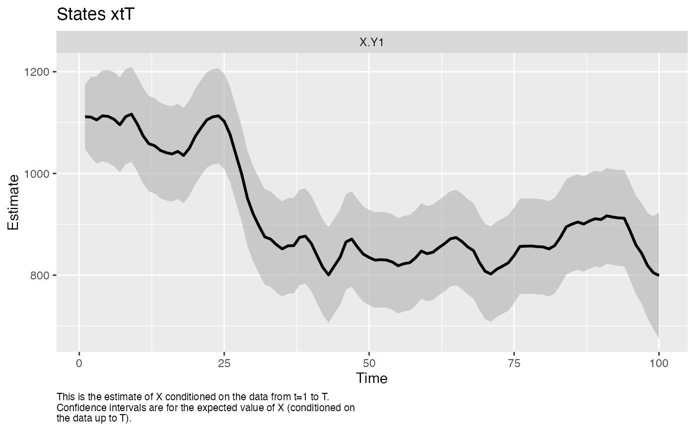
#> plot.type = xtT
#> Hit <Return> to see next plot (q to exit):
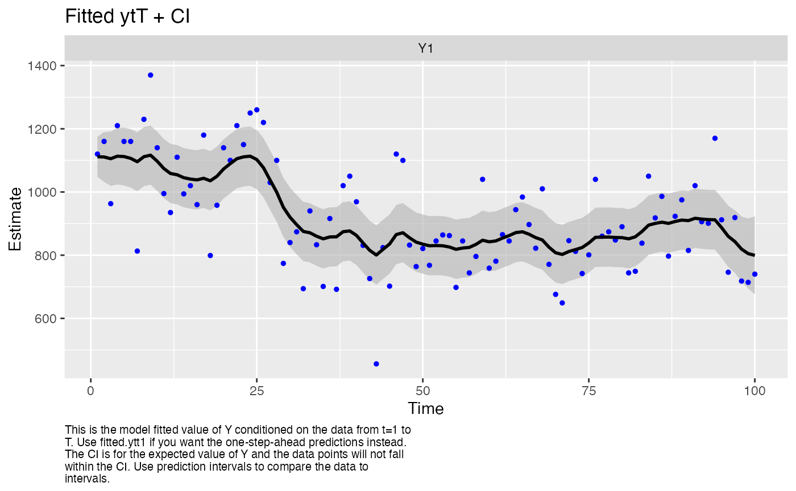
#> plot.type = fitted.ytT
#> Hit <Return> to see next plot (q to exit):
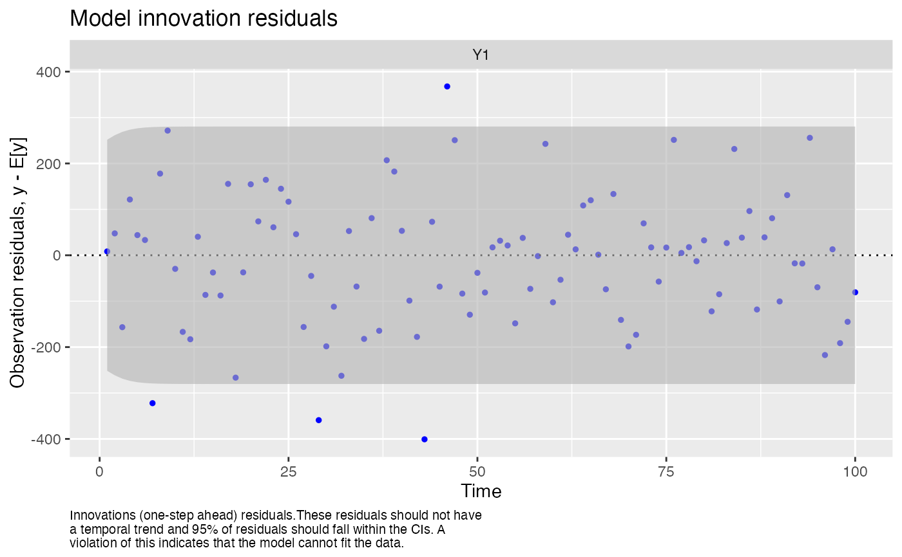
#> plot.type = model.resids.ytt1
#> Hit <Return> to see next plot (q to exit):
 #> plot.type = std.model.resids.ytT
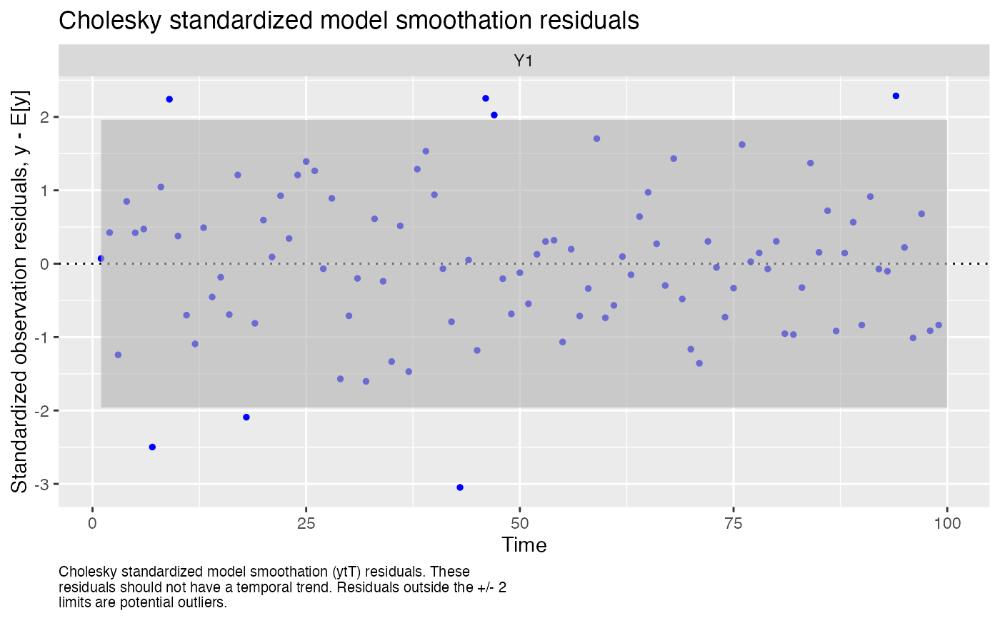
#> Hit <Return> to see next plot (q to exit):
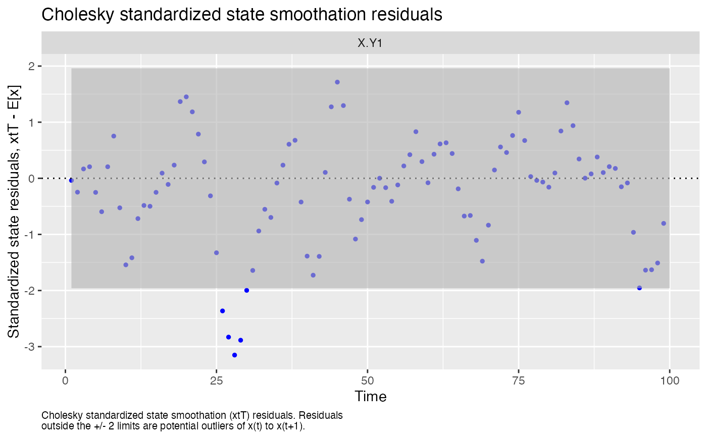
#> plot.type = std.state.resids.xtT
#> Hit <Return> to see next plot (q to exit):
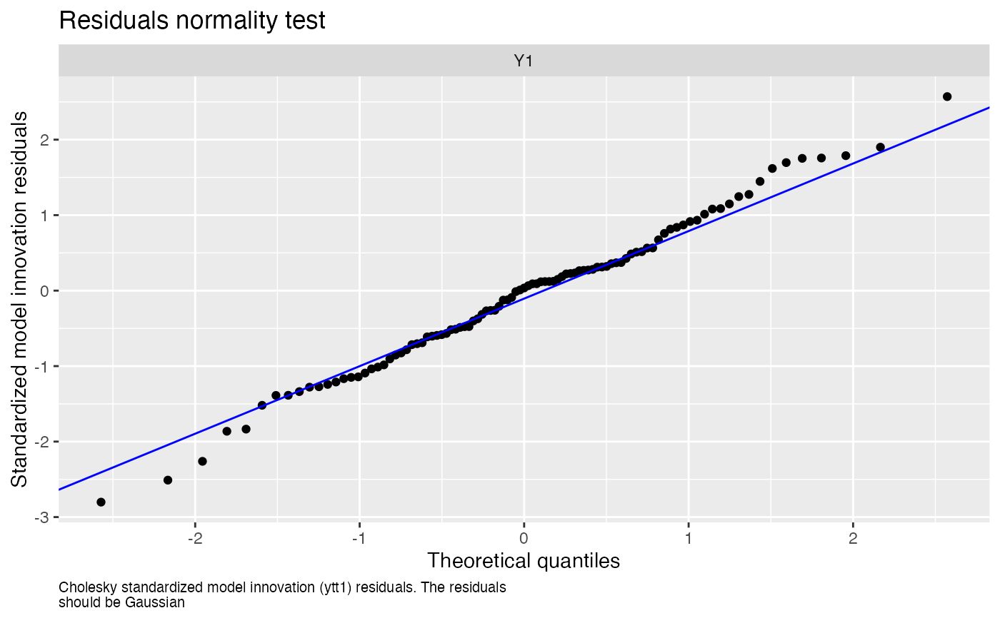
#> plot.type = qqplot.std.model.resids.ytt1
#> Hit <Return> to see next plot (q to exit):
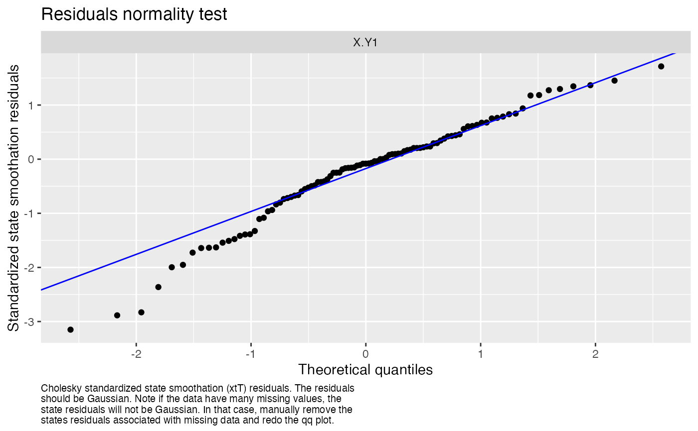
#> plot.type = qqplot.std.state.resids.xtT
#> Hit <Return> to see next plot (q to exit):
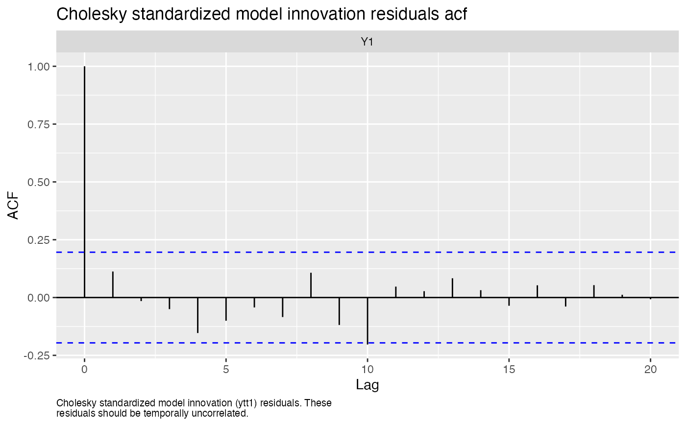
#> plot.type = acf.std.model.resids.ytt1
#> Finished plots.
# Below shows how to make plots manually but all of these can be made
# with autoplot(fit) or plot(fit)
plot(nile, type = "p", pch = 16, col = "blue")
lines(fitted(fit, type="ytT")$.fitted, col = "red", lwd = 2)
lines(fitted(fit, type="ytt1")$.fitted, col = "grey", lwd = 2)
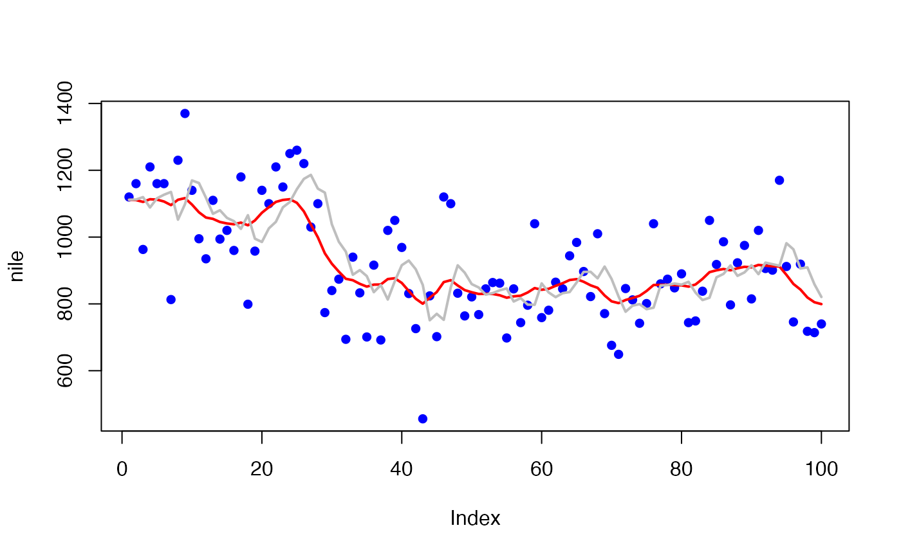
# Make a plot of the model estimate of y(t), i.e., put a line through the points
# Intervals are for new data not the blue dots
# (which were used to fit the model so are not new)
library(ggplot2)
d <- fitted(fit, type = "ytT", interval="confidence", level=0.95)
d2 <- fitted(fit, type = "ytT", interval="prediction", level=0.95)
d$.lwr <- d2$.lwr
d$.upr <- d2$.upr
ggplot(data = d) +
geom_line(aes(t, .fitted), linewidth=1) +
geom_point(aes(t, y), color = "blue", na.rm=TRUE) +
geom_ribbon(aes(x = t, ymin = .conf.low, ymax = .conf.up), alpha = 0.3) +
geom_line(aes(t, .lwr), linetype = 2) +
geom_line(aes(t, .upr), linetype = 2) +
facet_grid(~.rownames) +
xlab("Time Step") + ylab("Count") +
ggtitle("Blue=data, Black=estimate, grey=CI, dash=prediction interval") +
geom_text(x=15, y=7, label="The intervals are for \n new data not the blue dots")
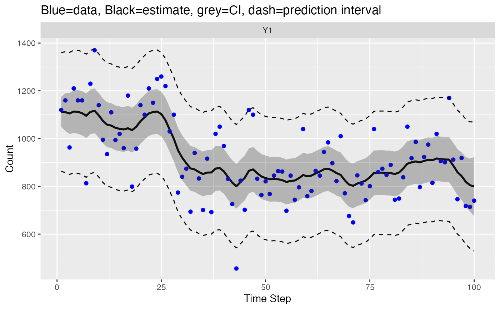
#> plot.type = std.model.resids.ytT
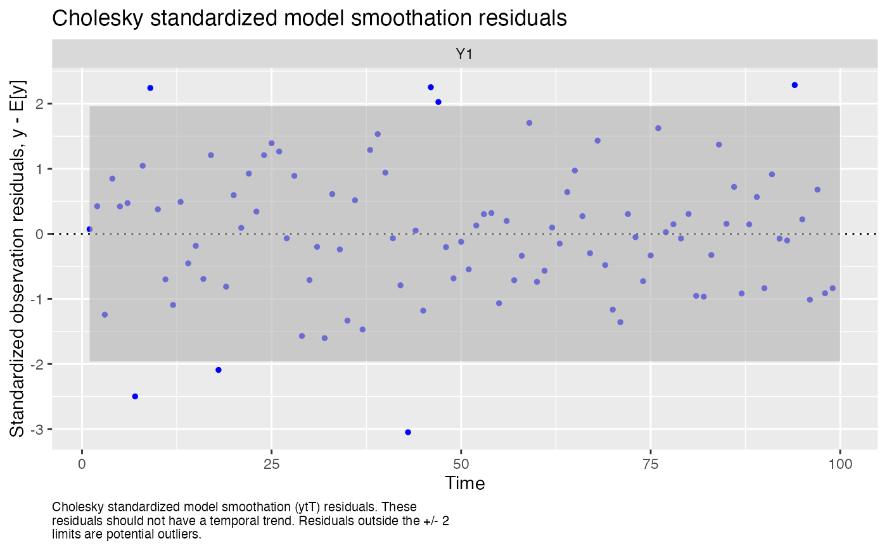
#> Hit <Return> to see next plot (q to exit):
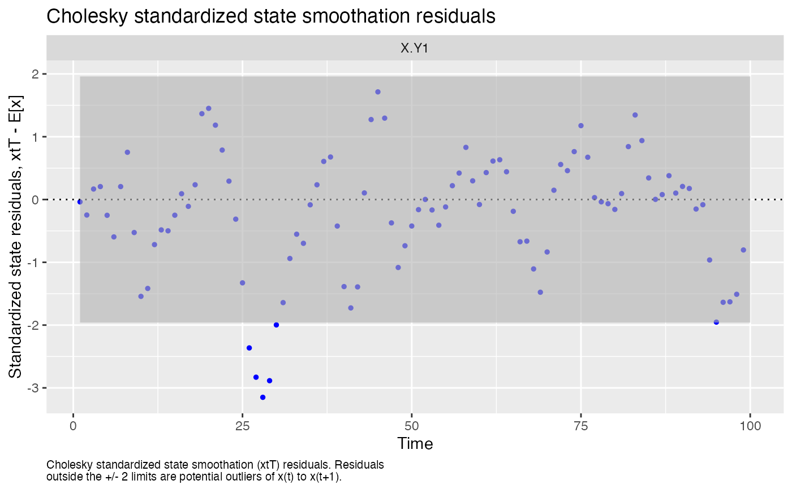
#> plot.type = std.state.resids.xtT
#> Hit <Return> to see next plot (q to exit):
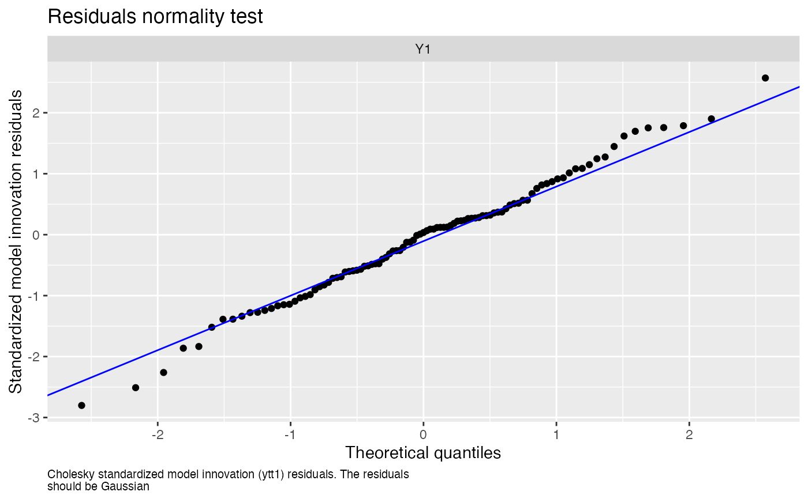
#> plot.type = qqplot.std.model.resids.ytt1
#> Hit <Return> to see next plot (q to exit):
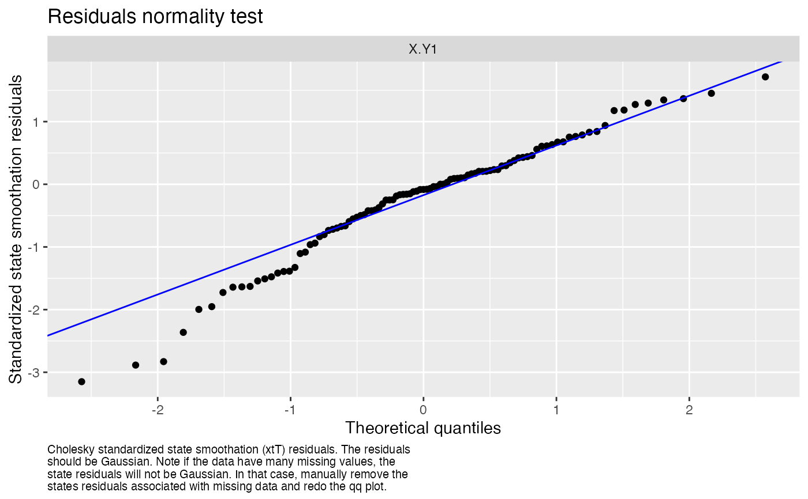
#> plot.type = qqplot.std.state.resids.xtT
#> Hit <Return> to see next plot (q to exit):
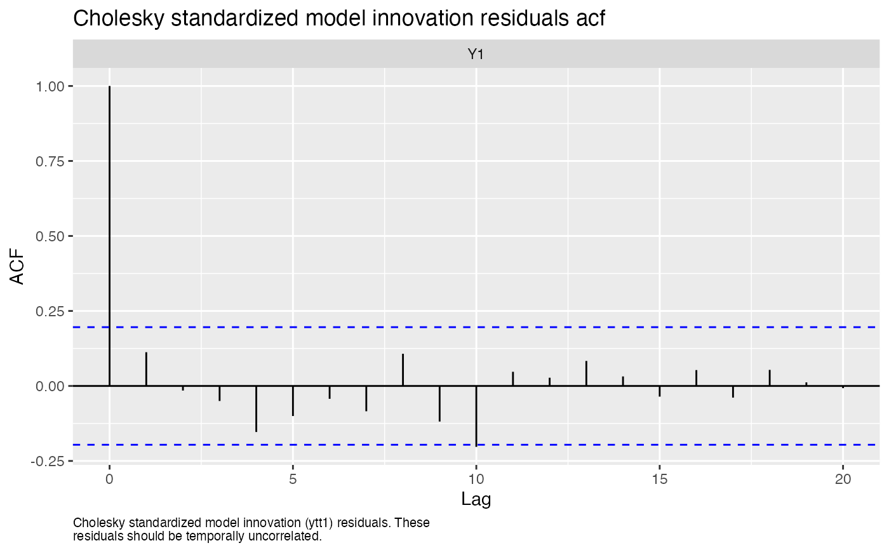
#> plot.type = acf.std.model.resids.ytt1
#> Finished plots.
# Below shows how to make plots manually but all of these can be made
# with autoplot(fit) or plot(fit)
plot(nile, type = "p", pch = 16, col = "blue")
lines(fitted(fit, type="ytT")$.fitted, col = "red", lwd = 2)
lines(fitted(fit, type="ytt1")$.fitted, col = "grey", lwd = 2)
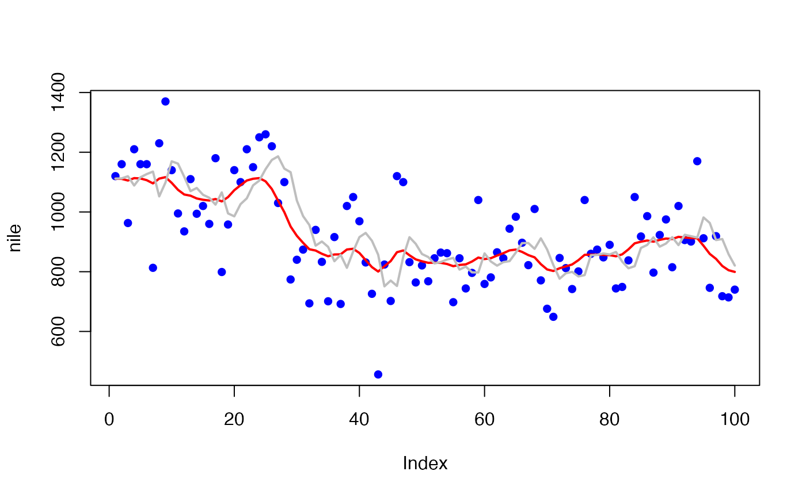
# Make a plot of the model estimate of y(t), i.e., put a line through the points
# Intervals are for new data not the blue dots
# (which were used to fit the model so are not new)
library(ggplot2)
d <- fitted(fit, type = "ytT", interval="confidence", level=0.95)
d2 <- fitted(fit, type = "ytT", interval="prediction", level=0.95)
d$.lwr <- d2$.lwr
d$.upr <- d2$.upr
ggplot(data = d) +
geom_line(aes(t, .fitted), linewidth=1) +
geom_point(aes(t, y), color = "blue", na.rm=TRUE) +
geom_ribbon(aes(x = t, ymin = .conf.low, ymax = .conf.up), alpha = 0.3) +
geom_line(aes(t, .lwr), linetype = 2) +
geom_line(aes(t, .upr), linetype = 2) +
facet_grid(~.rownames) +
xlab("Time Step") + ylab("Count") +
ggtitle("Blue=data, Black=estimate, grey=CI, dash=prediction interval") +
geom_text(x=15, y=7, label="The intervals are for \n new data not the blue dots")
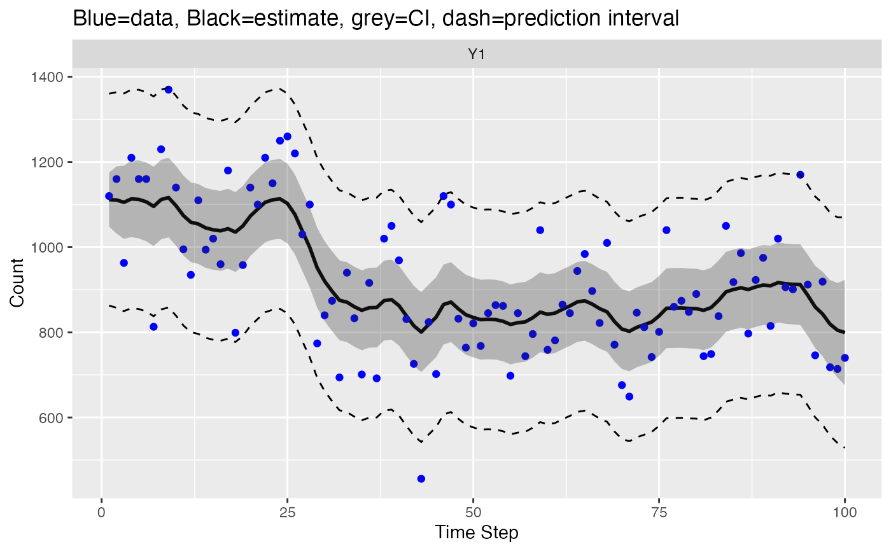